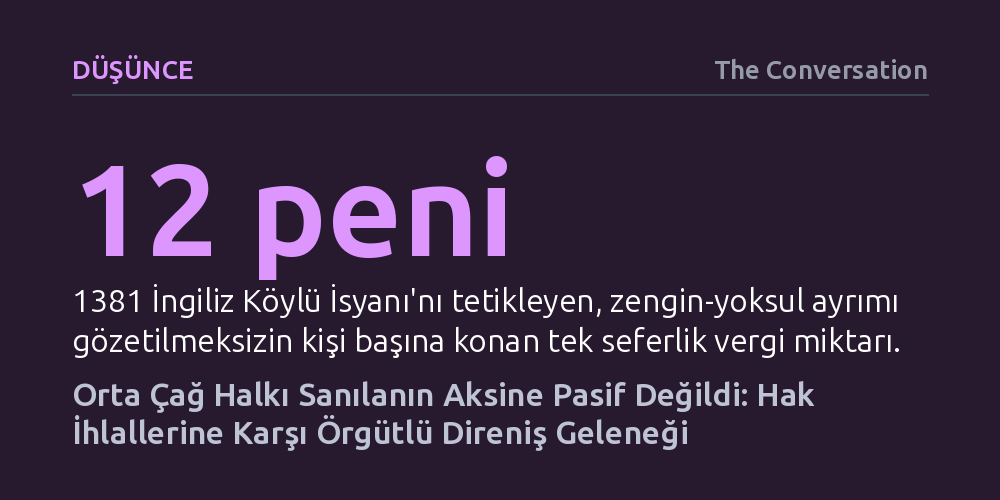

DUSUNCE · The Conversation · 2026-09-12
Tarihsel kayıtlar, Orta Çağ toplumlarının otoriteye sorgusuzca boyun eğmeyip vergi, ücret ve meşruiyet krizlerinde kitlesel ve örgütlü isyanlar başlattığını gösteriyor. Köylüler ve kent emekçileri, feodal yükümlülüklerini ihlal eden egemenlere karşı açıkça direnerek haklarını aradı.
Halkın hak arama ve iktidarı denetleme refleksinin modern çağa özgü olmadığını, Orta Çağ'da da meşruiyetini yitiren otoriteye karşı örgütlü şekilde işletildiğini gösterir.

Popüler kültür ve basitleştirilmiş tarih anlatıları, yaklaşık 500 ile 1500 yılları arasını kapsayan Orta Çağ insanını efendisine körü körüne itaat eden, siyasi bilinçten yoksun ve kaderine razı kitleler olarak yansıtır. Hak arama arzusunun ve iktidarın suistimallerine direnme iradesinin ancak Rönesans veya Reform hareketleriyle birlikte doğduğu varsayılır. Oysa tarihsel veriler bu tablonun gerçeği yansıtmadığını, Orta Çağ boyunca şaşırtıcı sıklıkta kitlesel halk ayaklanması ve kolektif siyasi eylem yaşandığını ortaya koyuyor.
Sıradan insanların elinde modern siyaset felsefesinin kavramları bulunmasa da iktidarın nasıl işlemesi gerektiğine dair son derece net fikirleri vardı. Feodal düzenin temeli karşılıklı hak ve sorumluluklara dayanıyordu. Krallar, piskoposlar, vergi memurları ya da kent soyluları bu zımni sözleşmeyi ihlal ettiğinde veya meşruiyetlerini kaybettiklerinde, halk geri çekilmek yerine doğrudan eyleme geçerek yöneticilerini hesap vermeye zorluyordu.
1348'de patlak veren Kara Veba salgını Avrupa nüfusunu kırıp geçirince kıtada büyük bir iş gücü açığı oluştu. Hayatta kalan serfler ve ücretli işçiler, emeklerinin değer kazanmasıyla birlikte efendilerine karşı daha yüksek ücret ve daha adil koşullar talep edebilecek bir pazarlık gücüne ulaştılar. Ancak İngiltere Kralı III. Edward 1351'de çıkardığı İşçiler Yasası ile ücretleri salgın öncesi seviyede dondurarak köylülerin sosyal hareketlilik umutlarını kanun zoruyla engelledi.
Bu baskı ortamı, 1381 yılında Edward'ın torunu olan 12 yaşındaki Kral II. Richard'ın Fransa ile süren savaşı finanse etmek için tek seferlik bir kelle vergisi koymasıyla patladı. Zengin ya da yoksul ayrımı yapılmaksızın kişi başına 12 peni olarak belirlenen bu vergi, yoksul ailelerin sırtına orantısız bir yük bindirdi. Bardağın taşmasıyla vergi memurlarına saldırılar başladı; kısa sürede örgütlenen köylüler feodal borç kayıtlarını, malikâneleri ve kaleleri ateşe vererek Londra'ya yürüdü.
İsyancılar bizzat kralla karşı karşıya gelip serfliğin kaldırılması, angaryaların son bulması ve toprak kiralarının düşürülmesi sözünü aldılar. Kral sonradan bu sözlerinden dönüp isyanı kanlı biçimde bastırmış olsa da bu kalkışma, sıradan insanların örgütlenerek merkezi iktidarı sarsabilecek bir güce ulaştığını gösterdi.
Bu başkaldırılar rastlantısal öfke patlamaları değildi; arkalarında kentlerde kök salmış güçlü bir örgütlenme geleneği bulunuyordu. Zanaatkâr ve tüccarların kurduğu loncalar ile mahalle ölçeğindeki dini yardımlaşma birlikleri, sıradan kentlilere ortak çıkarlar etrafında toplanma ve eylem koordine etme pratiği kazandırıyordu. Bu kurumlar halkın dayanışma ağlarını canlı tutarak siyasi taleplerin örgütlü bir güce dönüşmesini sağladı.
Fransa'da Yüzyıl Savaşları'nın yarattığı çöküş, halkın ödeyemeyeceği vergilerle birleşince 1358'de 'Jacquerie' olarak bilinen köylü isyanı patlak verdi. Soyluların hem ağır bedeller talep edip hem de kırsalı yağmalayan askerlere karşı halkı koruyamaması öfkeyi körükledi. Köylüler aristokratların mülklerini yerle bir ederken, Paris burjuvazisi ve belediye önderi Étienne Marcel ile ittifak kurarak yönetime doğrudan müdahale etmeye çalıştılar.
Benzer bir sınıf çatışması 1378'de Floransa'da yaşandı. Tekstil sanayisinin en altında yer alan ve loncalarda temsil edilmeyip haklardan mahrum bırakılan vasıfsız yün işçileri (Ciompi), sisteme dahil olma talepleri reddedilince hükümet binalarını bastı. Dört yıl boyunca kentin yönetiminde söz sahibi olmayı başaran işçiler, ezilenlerin siyasi temsil için iktidara meydan okuyabileceğinin ilk somut örneklerinden birini verdi.
Halkın direnme refleksi yalnızca feodal beylerle sınırlı değildi; dönemin en mutlak gücü kabul edilen Katolik Kilisesi dahi bu baskıdan muaf kalamadı. Başpiskopos veya papa vefat ettiğinde doğan güç boşluklarında halkın kilise mülklerini basıp yağmalaması sık rastlanan bir durumdu. Örneğin 1314'te Carpentras'taki papal seçiminde kardinaller uzlaşmayı geciktirince sabrı tükenen yerel halk piskoposluk sarayını bastı ve seçim iki yıl ertelenmek zorunda kaldı. 1378'de ise Roma halkının İtalyan bir papa seçilmesi yönündeki baskısı, kardinallerin sonradan seçimi geçersiz ilan etmesine ve Kilise'nin ikiye bölündüğü Büyük Batı Bölünmesi'ne yol açtı.
Halkın kırmızı çizgilerini aşmanın doğurduğu tepkileri gösteren bir diğer örnek 1367'de İtalya'nın Viterbo kentinde yaşandı. Fransız papa ve saray yetkililerinin halkın içme suyu kaynağı olan mahalle çeşmesinde küçük bir köpeği yıkaması üzerine iki gün süren bir halk isyanı çıktı. Çeşme tahrip edilirken papa ve kardinaller kaleye sığınarak canlarını zor kurtardı.
Günümüzde siyasi mekanizmalar ve ideolojiler değişmiş olsa da gücün meşruiyetini nasıl kazandığı ve toplumların bu güce nasıl rıza gösterdiği sorusu aynı kalmıştır. Orta Çağ insanının bize gösterdiği en yalın hakikat, otoritenin tek taraflı bir dayatma değil, karşılıklı yükümlülüklere dayalı bir denge olduğudur. Yönetenler kendi paylarına düşeni yapmadıklarında, sıradan insanların meşruiyeti sorgulama ve direnme refleksi tarihin her devrinde işlemeye devam etmiştir.